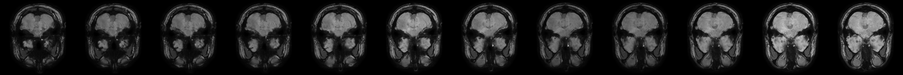

About a year and a half ago, my doctor in Canada requested me to get an MRI while trying to understand why am I having chronic headaches. I requested a copy of those files before going back to Turkey for a holiday to show them to another doctor so I ended up with a CD containing the raw data. I don’t normally work with MRI data but I did port a javascript library for MRI visualisation to R in a hackaton so I figured it shouldn’t be too hard to get a simple interactive visualisation of my own brain.
The CD contained the raw image files in the “DICOM” format which is a standard
method of storing medical imaging data. Individual slides are stored in a binary
format which is a problem because my package requires a sprite sheet that looks like
this to work properly.
Thankfully parsing data from this format is already handled by existing R packages.
I will use oro.dicom package to dump all images into a directory.
{kind=link}
I won’t be sharing the contents of the entire MRI CD here but if you have a similarly structured file, getting the images is quite simple.
library(oro.dicom) # dicom processing
library(magrittr)
library(dplyr)
library(OpenImageR) # saving black and white images from matrices
library(magick) # reading images creating tiles
library(ogbox) # github.com/oganm/ogbox. Just used to scale the data from 0 to 1
library(brainspriteR) # github.com/oganm/brainspriteR# path to the files exported from the CD
dicompath = 'files/mri-vis/MRI'
# list all image files
imageFiles = list.files(file.path(dicompath,'DICOM'),
recursive = TRUE,
full.names = TRUE)
metadata = oro.dicom::readDICOMFile(file.path(dicompath,'DICOMDIR'))
# get all images in order
imagesInOrder = metadata$hdr %>%
filter(name=='ReferencedFileID' & grepl('IM',value)) %$%
value %>% gsub(' ','/',.)
imagePaths = file.path(dicompath,imagesInOrder)
dir.create('files/mri-vis/images')
# now read all images one by one.
seq_along(imagePaths) %>% lapply(function(i){
x = imagePaths[i]
image = oro.dicom::readDICOMFile(x)
if(i ==2){
return(NULL)
}
# here we scale the matrices to be between 0 and 1 and write to file using OpenImageR
# we'll use other image processing packages but this function proved to be the
# simplest way to write matrices as image files
image$img %>%
ogbox::scale01() %>%
writeImage(paste0('files/mri-vis/images/',i,'.png'))
return(NULL)
})I didn’t bother fiddling with metadata and select images to extract which means the images folder
is filled with about 1500 images, only some of which are good enough to use in our 3D visualiser.
What we are looking for is, images taken from close-by slices to cover the brain from one end
to the other. There is a nice 128 image series that looks at axial slices that we can use.
You can find the individual image files here.
# image ids of the interesting series
imStart = 1394
imEnd = 1521
# read all images using magick
imFiles = list.files('files/mri-vis/images',full.names = TRUE)
imFiles = imFiles[imFiles %in% paste0('files/mri-vis/images/',imStart:imEnd,'.png')]
images = imFiles %>% lapply(image_read)
# scale the images down a little
images %<>% lapply(image_resize,'256x256')Now we have to combine these images to create our sprites so that the brainspriteR
can visualise them.
# create rows composed of 12 images
sideBySide = 1:ceiling(length(images)/12) %>% lapply(function(i){
image_append(do.call(c,images[(i*12-11):(i*12)]))
})
sideBySide[[3]]
# combine the rows
sprites = sideBySide %>%
do.call(c,.) %>%
image_append(stack = TRUE)
sprites %>% image_write('files/mri-vis/brainSprites.jpg')## used (Mb) gc trigger (Mb) max used (Mb)
## Ncells 579905 31.0 1201512 64.2 1201512 64.2
## Vcells 1016680 7.8 8388608 64.0 2490311 19.0In the end this is what the sprites look like. We can use this to create our visualisation. You can view different parts of the brain by clicking the area of interest in any of the slices.
{kind=link}
brainspriteR::brainsprite('files/mri-vis/brainSprites.jpg',
spriteHeight = 256,
spriteWidth = 256,
flagCoordinates = TRUE)Here, the first image is directly taken from the sprite file while the next two, depicting sagittal and coronal planes are generated by placing the images on top of each other and cutting a section. The thickness of these two planes are somewhat arbitrary as they depend on the number of images present on the series rather than the actual size of the structure. If we had more images in the series, the generated images would have looked thicker. If I didn’t resize the images, the sagittal and coronal planes whould have looked very thin in comparison as they would have gotten longer with the same width. You can control how your image looks by resizing the original images, or duplicating/subsampling them.
I don’t know if the raw data includes any information about the actual distance between the images but if we had that, we could have created a more accurate model.
As a side note, when I first looked at this without a doctor present, the size of that larger right lateral ventricle scared me quite a bit (it looks particularly striking around z = 167 on the coronal plane) but I was told that it was fine. So I guess the lesson is, don’t look at your medical data when you don’t know what you’re doing, but if you want to, there’s an R package for that.